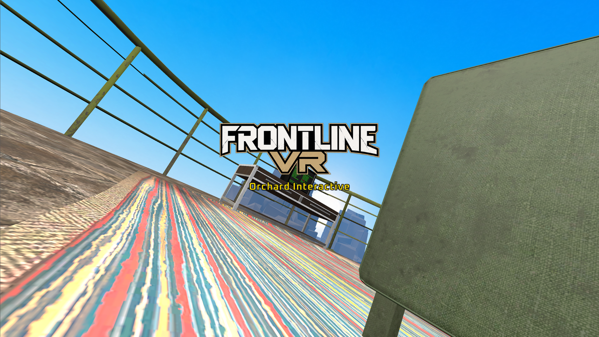
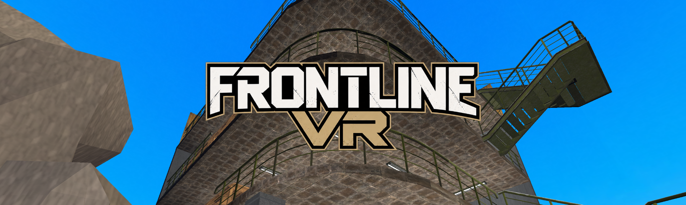
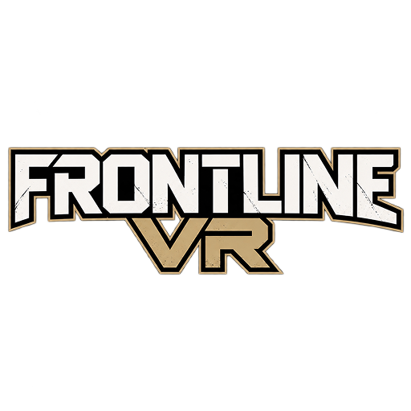

Built for immersion.
Orchard Interactive creates focused, physical and replayable virtual-reality experiences. Our flagship project is FRONTLINE VR.
Small studio.
Big worlds.
Orchard Interactive is an independent game studio focused on virtual reality, physical gameplay and worlds that reward exploration, mastery and replayability.
We build systems first: weapons that feel physical, spaces that encourage experimentation, and multiplayer experiences that stay readable and responsive in VR.
Current project


FRONTLINE VR is a tactical VR shooter built around physical weapons, gear, high-risk raids and immersive interaction.
Inside FRONTLINE
A look at weapons, attachments, targets and test environments currently being developed.
Development focus
Physical interaction
Weapons, magazines, attachments, healing and inventory interactions are designed to feel natural in VR.
Online systems
FRONTLINE is being built around reliable room flow, raid sessions and responsive networked interaction.
Standalone VR
Environment, culling and content are continually optimized with standalone headsets in mind.
Enter the Orchard.
Follow development, apply for testing and talk directly with the community.